Ce tutoriel est adapté de Getting started with R and RStudio du site Our Coding Club.
Pour savoir comment installer R et RStudio, cliquez ici
Introduction
Qu’est-ce que R ?
R est un langage de programmation statistique qui a rapidement gagné en popularité dans de nombreux domaines scientifiques.
Il a été développé par Ross Ihaka et Robert Gentleman, du Département de Statistiques de l’Université d’Auckland, comme implémentation libre du langage de programmation S.
| 1991 | Création du langage R |
| 1993 | R est dévoilé au public |
| 1996 | Article dans le Journal of Computational and Graphical Statistics |
R désigne également le logiciel qui utilise ce langage pour des calculs statistiques (et tout un tas d’autres applications (manipulation de données, graphiques, …).
Il dispose d’une communauté en ligne très active ainsi que d’extensions pour presque tous les domaines et applications possibles et imaginables (cartographie, fouille de texte, modélisation, …).
Contrairement à d’autres logiciels de statistiques comme Minitab ou SPSS, R peut être exécuté entièrement en ligne de commande et ne nécessite pas d’interface graphique, ce qui lui confère une grande flexibilité.
C’est un outil libre et open source (tout le monde peut utiliser le code et voir comment il fonctionne)
C’est un langage de programmation plutôt qu’une interface graphique, ce qui permet à l’utilisateur de sauvegarder facilement des scripts sous forme de texte pour les ré-utiliser ou les partager
Beaucoup de personnes l’utilisent dans beaucoup de domaines différents - il est rare d’être confronté à un problème qui n’a jamais été résolu !
Naviguer dans RStudio
La plupart des utilisateurs interagissent avec R à l’aide d’une interface graphique, dont la plus connue est RStudio.
En ouvrant RStudio, vous verrez une fenêtre comme celle ci-dessous, divisée en trois panneaux :

La console
Vous pouvez y taper du code et l’exécuter en appuyant sur Entrée.
Quand vous démarrez une nouvelle session dans RStudio, la console affiche également des informations comme la version de R présente sur votre ordinateur ainsi que des indications sur la manière d’obtenir de l’aide.
Dans la console, une ligne commence par > : c’est ce qu’on appelle l’invite de commande. Cela indique que R est prêt à recevoir vos instructions !
Tapez 2+2 puis appuyez sur Entrée : la console affiche le résultat.
2 + 2[1] 4Dans la console, vous pouvez parcourir les dernières commandes exécutées à l’aide des flèches haut et bas.
L’espace de travail
Vous y trouverez votre environnement (données importées, objets créés, fonctions définies, …), ainsi que d’autres onglets comme l’historique des commandes exécutées ou l’accès à des tutoriels (pour les versions récentes de RStudio).
R est un langage orienté objet, ce qui veut dire que tout ce que vous manipulez dans R est stocké dans un objet.
Lorsque vous quittez votre session RStudio, vous aurez la possibilité de sauvegarder votre espace de travail. Il est préférable de ne pas le faire afin de démarrer chaque session avec un espace de travail vide.
Le script
Le code tapé et exécuté dans la console ne sera plus disponible quand vous quitterez votre session RStudio. A la manière d’un document Word, un script vous permet de sauvegarder votre code afin d’y accéder ultérieurement ou de le partager.
Pour ouvrir un nouveau script, cliquez sur le “plus” dans le coin supérieur gauche de la fenêtre RStudio puis sur R Script.

Pour ouvrir un nouveau script, utilisez la combinaison Ctrl + Shift + N
Un nouveau panneau s’affiche :

Organiser son travail
Créer un projet
Lorsque vous partagez votre code avec d’autres personnes, celles-ci doivent pouvoir faire tourner vos analyses sans erreur et obtenir des résultats identiques (on parle de reproductibilité).
Les projets RStudio aident à construire une analyse reproductible en regroupant tous les éléments nécessaires dans un seul dossier (code, données, figures et paramètres). Cela vous évitera de perdre du temps à chercher des fichiers dans votre ordinateur : la racine du projet est votre répertoire de travail.
Nous verrons dans un autre tutoriel comment connecter un projet RStudio à un gestionnaire de version comme GitLab : vous pourrez travailler à plusieurs sur un même code en gardant une trace de toutes les modifications apportées par l’une ou l’autre personne.
Pour créer un projet, cliquez sur File puis New project… :

Choisissez New Directory puis New Project


Dans la fenêtre Create New Project, attribuez un nom et un emplacement au projet, puis cliquez sur Create project.

Quand vous voudrez travailler à nouveau sur ces données, il vous suffira d’ouvrir le projet en double-cliquant sur le fichier .Rproj.

- privilégiez les noms courts et explicites (à éviter : fichier_2e_version_a_verifier.txt)
- ne mettez ni espace ni caractères spéciaux (accents, symboles, …)
- pour les dates, privilégiez le format AAAAMMJJ (année, mois, jour)
- mettez l’élément le plus important en premier (par exemple : projet_date_contenu)
- optez pour l’une de ces deux conventions d’écriture : camel case (MonProjet) ou snake case (mon_projet)
Créer une arborescence
Il est toujours préférable de passer un peu de temps à bien organiser un projet lors de sa création, plutôt que de passer beaucoup de temps par la suite à déplacer des fichiers, les renommer, les rechercher, …
Pour créer un nouveau dossier dans votre projet, cliquez sur New Folder dans l’onglet Files du navigateur :

L’organisation proposée ci-dessous est utilisable dans une très grande majorité de cas :
raw : données brutes
data : données issues de la manipulation/modification des données brutes
scripts : code utilisé pour analyser les données, créer les graphiques, …
results : fichiers de résultats obtenus durant l’analyse
figures : graphiques générés au cours de l’analyse
docs : rapports, présentations, articles en lien avec l’analyse, documents concernant les outils utilisés, … |

Importer des données
Le jeu de données que nous allons utiliser contient des mesures pour trois espèces de pingouins vivant sur l’archipel Palmer en Antarctique.
Toute opération réalisée dans R, que ce soit importer ou exporter des données, effectuer des calculs ou encore créer des graphiques, fait appel à une fonction. Une fonction est constituée de code et permet d’exécuter une action.
La manière dont la fonction s’exécute peut se modifier à l’aide d’arguments (obligatoires ou optionnels).
Pour importer les données, nous utilisons la fonction read.csv() en précisant deux arguments :
- le chemin vers l’emplacement du fichier à importer entre guillemets
- l’argument
check.names = FALSEpour conserver les noms de colonnes tels quels.
Tapez le code ci-dessous dans votre script puis cliquez sur Run
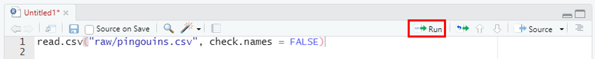
R vous aide à compléter votre code : tapez re puis Tab, et vous verrez s’afficher une liste de fonctions ou d’objets commençant par ces deux lettres. Vous pouvez naviguer à l’aide des flèches haut et bas et valider votre choix en appuyant à nouveau sur Tab. Cette fonctionnalité de R est particulièrement utile lorsque vous manipulez des fichiers ou objets ayant des noms complexes.
Dans la console, le code s’exécute et les données sont affichées. Cela indique que la commande a bien fonctionné, mais que les données ne sont pour l’instant pas disponibles dans notre environnement. Nous allons donc importer les données et les stocker dans un objet que nous appelons pingouins. Pour cela nous utilisons la flèche d’assignation <-.
Pour insérer une flèche d’assignation, utilisez la combinaison Alt + “-” (tiret du 6).
Tapez le code ci-dessous dans votre script puis cliquez sur Run :
pingouins <- read.csv("raw/pingouins.csv", check.names = FALSE)Pour exécuter une ou plusieurs lignes de code, sélectionnez les lignes et utilisez la combinaison Ctrl + Entrée
Vous pouvez également importer des données en cliquant sur Import Dataset puis sur From Text (base)… dans le panneau Environnement :
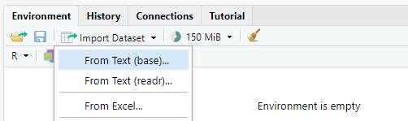
Choisissez le fichier à importer. La fenêtre qui s’ouvre vous permet de vérifier que les données seront correctement importées (présence d’un en-tête, séparateur de colonnes, …) :

La commande utilisée pour importer les données s’affiche dans la console. En procédant ainsi, R utilise le chemin absolu vers le fichier (à partir de la racine du disque dur), alors que nous avions utilisé le chemin relatif (à partir du répertoire de travail) à l’intérieur de la fonction read.csv().
Notre environnement contient maintenant un objet pingouins, et vous pouvez voir l’indication 344 obs. of 9 variables : le jeu de données contient 344 observations (lignes) et 9 variables (colonnes).

En cliquant sur la flèche bleue à gauche du nom de l’objet, vous aurez accès à plus d’informations :

les noms des variables, précédés du signe
$le type de chaque varible : caractère (chr), nombres entiers (int) ou décimaux (int), logique (log)
les premiers éléments de chaque variable
Cet opérateur permet de sélectionner la colonne d’un tableau. Dans la console, tapez pingouins$ et appuyez sur Tab.

Vous pouvez choisir la variable qui vous intéresse à l’aide des flèches haut et bas (Espece par exemple) puis appuyer à nouveau sur Tab pour valider. Vous verrez alors s’afficher les 344 observations de cette variable.

Vous pouvez afficher le tableau en cliquant sur l’icône à droite du nom de l’objet dans l’environnement.

Cela ouvre un nouvel onglet à côté de votre script :

Prenez dès maintenant l’habitude de commenter vos scripts. Il s’agit de rédiger des commentaires qui expliquent ce que fait votre code, pour le rendre plus compréhensible par vos collègues - et par vous-même quand vous reviendrez sur un script après un certain temps !
Pour ajouter un commentaire, utilisez un # au début d’une ligne puis rédigez votre commentaire. Dans R, un code placé après un # n’est pas exécuté :
# Ceci est un commentaire qui ne sera pas exécuté
# La ligne suivante sera exécutée
2 + 2[1] 4Pour commencer, ajoutons des informations en haut de notre script :
# Ateliers codons
# Premiers pas avec R
# 2022-11-07
# Importer le jeu de donnees
pingouins <- read.csv("raw/pingouins.csv", check.names = FALSE)Pour commenter ou dé-commenter des lignes de code, utilisez la combinaison Ctrl + Shift + C.
Avant d’aller plus loin, sauvegardez votre script en cliquant sur l’icône disquette en haut de votre script :
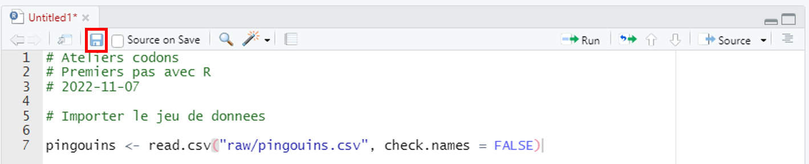
Choisissez le dossier où sera sauvegardé votre script - scripts dans notre cas, et nommez votre script puis cliquez sur Save :

Pour sauvegarder un script, uilisez la combinaison Ctrl + S
Explorer des données
Avant de débuter une analyse des données, il est toujours utile d’explorer rapidement ces données afin de s’assurer qu’elles ont été correctement importées, que les variables numériques sont effectivement des nombres et pas des chaînes de caractères, …
Cette première étape consistant à vérifier les données, le code utilisé peut être tapé directement dans la console. Le script contiendra plutôt le code utilisé pour nettoyer les données, ainsi que toutes les étapes ultérieures de l’analyse.
Commençons par regarder à quel structure de données nous avons affaire :
class(pingouins)[1] "data.frame"Quel type de données contient la variable Espece ?
typeof(pingouins$Espece)[1] "character"Il existe plusieurs structures de données :
Un vecteur est un objet à une dimension contenant une chaîne d’éléments d’un seul type
Un facteur est un vecteur contenant un nombre limité de modalités
Un data frame est un tableau dont les colonnes (des vecteurs) peuvent être de différents types
Une matrice est un tableau ne contenant qu’un seul type de données
Une liste peut contenir différents éléments (un vecteur, un data frame, …)
Ces structures peuvent contenir différents types de données :
des caractères
des nombres entiers
des nombres décimaux (dans R, le séparateur décimal est le point
.)des opérateurs logiques (TRUE ou FALSE)
Vous pouvez afficher les dimensions et la structure des données :
# Dimensions du tableau (nb lignes par nb colonnes)
dim(pingouins)[1] 344 9# Structure du tableau
str(pingouins)'data.frame': 344 obs. of 9 variables:
$ etudeNumero : chr "PAL0708" "PAL0708" "PAL0708" "PAL0708" ...
$ Echantillon Numero : int 1 2 3 4 5 6 7 8 9 10 ...
$ Espece : chr "Adelie Penguin (Pygoscelis adeliae)" "Adelie Penguin (Pygoscelis adeliae)" "Adelie Penguin (Pygoscelis adeliae)" "Adelie Penguin (Pygoscelis adeliae)" ...
$ Ile : chr "Torgersen" "Torgersen" "Torgersen" "Torgersen" ...
$ ID Individu : chr "N1A1" "N1A2" "N2A1" "N2A2" ...
$ Longueur Bec (mm) : num 39.1 39.5 40.3 NA 36.7 39.3 38.9 39.2 34.1 42 ...
$ Hauteur Bec (mm) : num 18.7 17.4 18 NA 19.3 20.6 17.8 19.6 18.1 20.2 ...
$ Longueur Aile (mm) : int 181 186 195 NA 193 190 181 195 193 190 ...
$ Masse corporelle (g): int 3750 3800 3250 NA 3450 3650 3625 4675 3475 4250 ...Vous remarquerez que la fonction str(pingouins) affiche des informations très proches de celles obtenues en cliquant sur la flèche bleue à gauche de l’objet pingouins dans l’environnement.
Les fonctions suivantes permettent l’afficher le début ou la fin du tableau :
# Afficher les premieres lignes du tableau
head(pingouins)
# Afficher les dernieres lignes du tableau
tail(pingouins)Vous pouvez afficher l’aide d’une fonction de deux manières :
taper
help(fonction)(pensez à l’auto-complétion !)taper
?fonction
Essayez en tapant dans la console ?he puis appuyez sur Tab : R vous propose une liste de fonctions commençant par he. Utilisez les flèches haut et bas pour choisir la fonction head. Une petite fenêtre vous donne un aperçu du contenu de l’aide pour la fonction (utile quand vous hésitez entre plusieurs fonctions). Une fois la fonction sélectionnée, appuyez sur la touche F1 pour afficher l’aide complète dans l’onglet Help.
L’aide d’une fonction contient plusieurs paragraphes :
Description : présentation sommaire de la fonction
Usage : comment utiliser la fonction
Arguments : ils peuvent être obligatoires ou optionnels
Details : format de données à fournir en entrée, précisions sur les arguments, …
Value : type d’objet obtenu en sortie
Note : informations additionnelles
Author(s) : personnes ayant contribué à l’écriture du code de la fonction
Examples : exemples d’utilisation, avec la possibilité d’exécuter ces exemples
Dans le cas de head(), vous pouvez voir que par défaut, la fonction retournera les 6 premières lignes (n = 6L, L indiquant qu’il s’agit d’un nombre entier). Pour afficher uniquement les deux premières lignes du tableau pingouins, il vous faudrait modifier cet argument : head(pingouins, n = 2L)
La fonction table() permet d’extraire d’une variable les observations uniques et d’afficher le nombre de fois qu’elles apparaissent :
table(pingouins$Espece)
Adelie Penguin (Pygoscelis adeliae)
152
Chinstrap penguin (Pygoscelis antarctica)
68
Gentoo penguin (Pygoscelis papua)
124 Vous pouvez explorer une variable d’intérêt à l’aide de l’opérateur $ :
# Afficher les premiers elements d'une variable
head(pingouins$`Masse corporelle (g)`)
# Afficher les derniers elements d'une variable
tail(pingouins$`Masse corporelle (g)`)
# Afficher le type, le nombre d'elements et les premiers elements d'une variable
str(pingouins$`Masse corporelle (g)`)La fonction summary() est particulièrement intéressante pour avoir une vue d’ensemble de vos données.
summary(pingouins)
Les informations affichées dépendent du type de variable :
- nombre d’éléments, classe et mode pour les variables de type caractère
- statistiques pour les variables de type numérique
Vous pouvez trouver dans vos données des éléments notés NA. Il s’agit d’une donnée manquante (Not Available) : aucune donnée n’existe pour ce cas précis.
Cette valeur NA est à différencier de la valeur NaN (Not a Number) également rencontrée dans R. Il s’agit alors du résultat d’une opération arithmétique invalide, telle que 0/0.
Manipuler des données
Sélectionner et filtrer des données
Dans R, la sélection de données, que ce soit une cellule, une ligne ou une colonne d’un tableau, ou encore un élément dans une chaîne, s’effectue à l’aide des crochets [].
- Imaginons un vecteur v, donc un objet à une seule dimension. Vous pouvez sélectionner un seul élément (
v[2]), plusieurs éléments qui se suivent (v[2:4]) ou non (v[c(2, 4)]).

La fonction c() permet de concaténer les éléments entre parenthèses.
- Imaginons un data frame d, la sélection s’effectue toujours à l’aide des crochets, mais en précisant deux paramètres séparés d’une virgule : la ou les ligne(s) et la ou les colonnes(s). Pour sélectionner l’ensemble d’une des deux dimensions, on utilise un espace vide d’un côté ou de l’autre de la virgule.
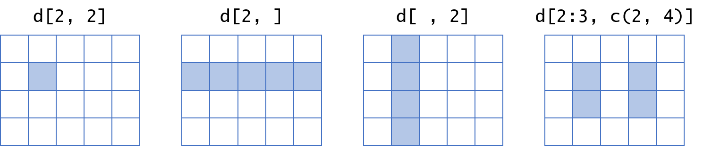
Certaines colonnes du tableau ne sont seront pas utiles pour la suite de l’analyse. Nous pouvons soit :
- sélectionner les colonnes qui nous intéressent
pingouins[, c(3, 6:9)]- supprimer les colonnes inutiles
pingouins[, -c(1:2, 4:5)]Ces deux commandes utilisent les index des colonnes. Vous pouvez également sélectionner ou supprimer des colonnes à l’aide de noms des variables :
pingouins[, c("Espece", "Longueur Bec (mm)", "Hauteur Bec (mm)",
"Longueur Aile (mm)", "Masse corporelle (g)")]Assignons ce nouveau tableau dans un objet :
pingouins_propre <- pingouins[, c("Espece", "Longueur Bec (mm)",
"Hauteur Bec (mm)","Longueur Aile (mm)",
"Masse corporelle (g)")]Nous pouvons filtrer les données selon différents critères, à l’aide d’opérateurs.
| == | égal |
| != | différent |
| < | inférieur à |
| <= | inférieur ou égal à |
| > | supérieur à |
| >= | supérieur ou égal à |
| == | égal |
| & | et |
| | | ou |
| ! | pas |
# Individus de l'espece Adelie
pingouins_propre[pingouins_propre$espece == "Adelie", ]
# Individus dont la masse est d'au moins 5 kgs
pingouins_propre[pingouins_propre$masse_corporelle_g >= 5000, ]
# Individus de l'espece Adelie dont le bec mesure moins de 40mm de long
pingouins_propre[pingouins_propre$espece == "Adelie" & pingouins_propre$longueur_bec_mm >= 40, ]Renommer des colonnes
Les noms des colonnes ne sont pas dans un format idéal (présence d’espaces, de parenthèses).
La fonction names() permet d’accéder aux noms des colonnes d’un tableau :
names(pingouins_propre)[1] "Espece" "Longueur Bec (mm)" "Hauteur Bec (mm)"
[4] "Longueur Aile (mm)" "Masse corporelle (g)"Nous allons modifier les noms de colonnes en :
supprimant les parenthèses
remplaçant les espaces par des
_remplaçant les majuscules par des minuscules
La fonction gsub() qui permet de remplacer un motif par un autre dans une chaîne, s’utilise de la manière suivante : gsub(motif, remplacement, objet)
Commençons par supprimer les parenthèses. Nous allons pour cela utiliser une expression régulière : le motif recherché est soit une parenthèse ouverte soit une parenthèse fermée.
nouveaux_noms <- gsub("[()]", "", names(pingouins_propre))Remplaçons maintenant les espaces par des _ :
nouveaux_noms <- gsub(" ", "_", nouveaux_noms)La fonction tolower() permet de remplacer les majuscules d’une chaîne de caractères par des minuscules (à l’inverse de la fonction toupper()) :
nouveaux_noms <- tolower(nouveaux_noms)Remplaçons les noms de colonnes du tableau par ce vecteur nouveaux_noms :
names(pingouins_propre) <- nouveaux_nomsAssurons-nous que notre tableau contient bien les nouveaux noms de colonnes :
names(pingouins_propre)[1] "espece" "longueur_bec_mm" "hauteur_bec_mm"
[4] "longueur_aile_mm" "masse_corporelle_g"Lorsque nous utilisons une flèche d’assignation, le résultat du code exécuté ne s’affiche pas dans la console. Pour éviter de taper le nom de l’objet que l’on souhaite afficher pour vérifier que le code a bien fonctionné, nous pouvons entourer le code par des parenthèses :
(names(pingouins_propre) <- nouveaux_noms)Le résultat de la commande s’affiche maintenant dans la console.
Nous pouvons maintenant supprimer l’objet nouveaux_noms de notre environnement à l’aide de la fonction rm() (remove) :
rm(nouveaux_noms)Vous pouvez également supprimer des objets directement dans le panneau Environnement :
- Sur la droite du panneau, cliquez sur List puis sur Grid
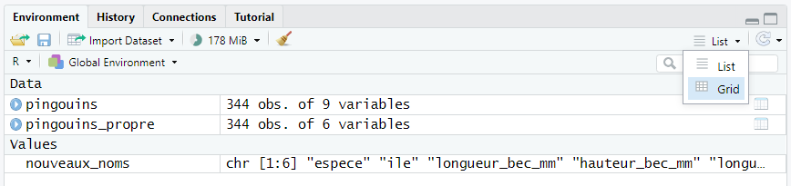
- Cochez les objets à supprimer puis cliquez sur le balai

Attention : si vous cliquez sur le balai alors que les objets sont sous forme de liste, vous supprimerez tous les objets de votre environnement.
Modifier une variable
Les noms d’espèces contenus dans la variable espece sont plutôt longs et peu pratiques à manipuler. Nous allons modifier le contenu de cette variable pour ne garder que le premier mot de chaque chaîne de caractères (Adelie, Chinstrap et Gentoo). Nous allons à nouveau utiliser la fonction gsub() avec une expression régulière pour supprimer tout ce qui vient après le premier espace (nous pourrions également extraire tout ce qui vient avant le premier espace).
pingouins_propre$espece <- gsub(" .*$", "", pingouins_propre$espece)
head(pingouins_propre) espece longueur_bec_mm hauteur_bec_mm longueur_aile_mm masse_corporelle_g
1 Adelie 39.1 18.7 181 3750
2 Adelie 39.5 17.4 186 3800
3 Adelie 40.3 18.0 195 3250
4 Adelie NA NA NA NA
5 Adelie 36.7 19.3 193 3450
6 Adelie 39.3 20.6 190 3650Dans cette expression régulière (regex), le motif recherché est le suivant : un espace vide () suivi de n’importe quel caractère (.) absent ou répété au moins une fois (*), en fin de chaîne ($).
Ajouter une variable
Quel est le rapport entre la longueur du bec et sa hauteur ? Calculons le ratio :
pingouins_propre$ratio_bec <- pingouins_propre$longueur_bec_mm / pingouins_propre$hauteur_bec_mmPour arrondir ce ratio à deux chiffres après la virgules, nous pouvons utiliser la fonction round() :
pingouins_propre$ratio_bec <- round(pingouins_propre$ratio_bec, digits = 2)Supprimer les données manquantes
Notre jeu de données contient des données manquantes (NA). En affichant les premières lignes, vous pourrez remarquer que pour l’individu situé sur la quatrième ligne, aucune donnée numérique n’est disponible :
head(pingouins_propre) espece longueur_bec_mm hauteur_bec_mm longueur_aile_mm masse_corporelle_g
1 Adelie 39.1 18.7 181 3750
2 Adelie 39.5 17.4 186 3800
3 Adelie 40.3 18.0 195 3250
4 Adelie NA NA NA NA
5 Adelie 36.7 19.3 193 3450
6 Adelie 39.3 20.6 190 3650
ratio_bec
1 2.09
2 2.27
3 2.24
4 NA
5 1.90
6 1.91Pour savoir combien de données manquantes sont présentes dans vos données, vous pouvez utiliser la commande suivante :
table(is.na(pingouins_propre))
FALSE TRUE
2054 10 Nos données contiennent 10 valeurs NA, nous en avons déjà trouvé 5 dans les premières lignes du tableau. Les 5 données manquantes restantes viennent-elles de l’absence de mesure pour un second individu ? La fonction complete.cases() permet d’extraires les lignes d’un tableau pour lesquelles il n’y a aucune donnée manquante. Nous cherchons à extraire les lignes qui contiennent au moins une donnée manquante. Pour cela nous allons filtrer les données en extrayant les lignes à l’aide de l’opétateur de négation ! :
pingouins_propre[!complete.cases(pingouins_propre), ] espece longueur_bec_mm hauteur_bec_mm longueur_aile_mm masse_corporelle_g
4 Adelie NA NA NA NA
272 Gentoo NA NA NA NA
ratio_bec
4 NA
272 NANous avons ici les dix données manquantes. Nous allons supprimer ces deux individus du jeu de données :
pingouins_propre <- pingouins_propre[complete.cases(pingouins_propre), ]Nous aurions également pu supprimer les lignes pour lesquelles une des variables numériques contient des données manquantes :
pingouins_propre <- pingouins_propre[!is.na(pingouins_propre$longueur_bec_mm), ]Assurons-nous d’avoir bien supprimé ces données manquantes :
table(is.na(pingouins_propre))
FALSE
2052 Transformer un vecteur en un facteur
Affichons la synthèse de nos données
summary(pingouins_propre) espece longueur_bec_mm hauteur_bec_mm longueur_aile_mm
Length:342 Min. :32.10 Min. :13.10 Min. :172.0
Class :character 1st Qu.:39.23 1st Qu.:15.60 1st Qu.:190.0
Mode :character Median :44.45 Median :17.30 Median :197.0
Mean :43.92 Mean :17.15 Mean :200.9
3rd Qu.:48.50 3rd Qu.:18.70 3rd Qu.:213.0
Max. :59.60 Max. :21.50 Max. :231.0
masse_corporelle_g ratio_bec
Min. :2700 Min. :1.640
1st Qu.:3550 1st Qu.:2.160
Median :4050 Median :2.575
Mean :4202 Mean :2.606
3rd Qu.:4750 3rd Qu.:3.100
Max. :6300 Max. :3.610 La variable espece est considérée comme une simple chaîne de caractère. S’agit-il d’une variable ayant un nombre restreint de modalités ? Pour le savoir, comptons le nombre d’observations uniques :
length(unique(pingouins_propre$espece))[1] 3Nous aurions pu également utiliser la fonction table() pour extraire les modalités et leur fréquence :
table(pingouins_propre$espece)
Adelie Chinstrap Gentoo
151 68 123 Il n’y a que trois modalités possibles pour cette variable : il s’agit d’une variable catégorielle. La fonction as.factor() permet de transformer un vecteur en un facteur. Par défaut, les modalités (niveaux) d’un facteur sont classés par ordre alphabétique. Vous pouvez définir l’ordre des niveaux à l’aide de l’argument levels = ....
pingouins_propre$espece <- as.factor(pingouins_propre$espece)Vérifiez que les corrections apportées aient bien été appliquées au jeu de données :
summary(pingouins_propre) espece longueur_bec_mm hauteur_bec_mm longueur_aile_mm
Adelie :151 Min. :32.10 Min. :13.10 Min. :172.0
Chinstrap: 68 1st Qu.:39.23 1st Qu.:15.60 1st Qu.:190.0
Gentoo :123 Median :44.45 Median :17.30 Median :197.0
Mean :43.92 Mean :17.15 Mean :200.9
3rd Qu.:48.50 3rd Qu.:18.70 3rd Qu.:213.0
Max. :59.60 Max. :21.50 Max. :231.0
masse_corporelle_g ratio_bec
Min. :2700 Min. :1.640
1st Qu.:3550 1st Qu.:2.160
Median :4050 Median :2.575
Mean :4202 Mean :2.606
3rd Qu.:4750 3rd Qu.:3.100
Max. :6300 Max. :3.610 Votre script commence à être bien fourni. Vous pouvez le diviser en différentes parties pour simplifier la lecture. Pour cela, ajoutez des titres sous forme de commentaires et accolez des tirets (au moins quatre) pour signaler à R qu’il s’agit de divisions dans votre script.

En cliquant sur l’icône Menu à droite vous aurez accès à une table des matières dans laquelle vous pourrez naviguer en cliquant sur la partie qui vous intéresse.

Pour afficher le sommaire de votre script, utilisez la combinaison Ctrl + Shift + O.
Vous pouvez également replier (Alt + O) ou déplier (Alt + Shift + O) les sections.
Exporter des données
La fonction write.csv() permet d’exporter un tableau :
write.csv(pingouins_propre, "data/pingouins_propre.csv")Représenter des données
Barplot
Pour représenter le nombre d’individus par espèce, nous allons utiliser un graphique en barres (barplot) : la hauteur de chaque barre indique le nombre d’individus.
Il nous faut pour cela un objet contenant l’information sur le nombre d’individus par espèce :
table(pingouins_propre$espece)
Adelie Chinstrap Gentoo
151 68 123 La fonction barplot() permet de générer un graphique en barres :
barplot(table(pingouins_propre$espece))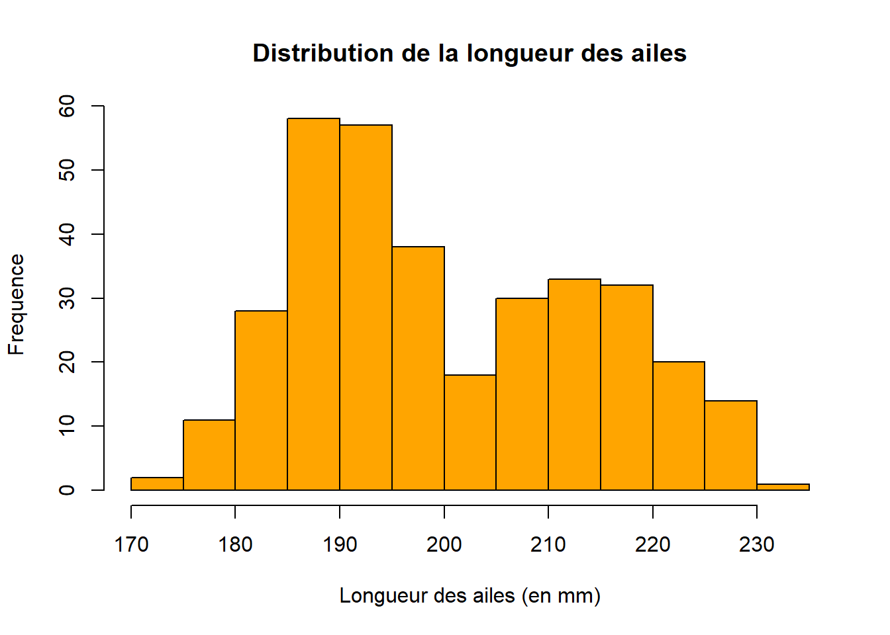
Ce graphique est très basique, nous pouvons améliorer plusieurs points :
- trier les données : nous aimerions que les barres soient triées par ordre décroissant. La fonction
sort()permet de trier des données, avec l’argumentdecreasing = TRUEpour modifier l’ordre (croissant par défaut)
barplot(sort(table(pingouins_propre$espece),
decreasing = TRUE))
- ajouter des couleurs : le paramètre
colpermet de modifier la couleur de remplissage des barres, et le paramètreborderla couleur de contour. Nous aimerions utiliser les couleurs de l’image ci-dessous :

barplot(sort(table(pingouins_propre$espece),
decreasing = TRUE),
col = c("darkorange", "cyan4", "purple"),
border = NA)
- ajouter des titres au graphique et aux axes : l’argument
mainpermet d’ajouter un titre au graphique alors que les argumentsxlabetylabpermettent de modifier les titres des axes.
barplot(sort(table(pingouins_propre$espece),
decreasing = TRUE),
col = c("darkorange", "cyan4", "purple"),
border = NA,
main = "Pingouins de l'archipel Palmer",
ylab = "Nombre d'individus par espèce")
- ajuster l’échelle de l’axe y : la valeur maximale dépasse la plus grande valeur affichée sur l’axe y. Les options
xlimetylimpermettent d’ajuster les limites des axes.
barplot(sort(table(pingouins_propre$espece),
decreasing = TRUE),
col = c("darkorange", "cyan4", "purple"),
border = NA,
main = "Pingouins de l'archipel Palmer",
ylab = "Nombre d'individus par espèce",
ylim = c(0, 200))
Boxplot
Un boxplot, ou graphique en boîte à moustaches, permet de représenter la dispersion d’une variable.
Nous aimerions représenter la dispersion du ratio entre la longueur et la hauteur du bec. Nous utilisons pour cela la fonction boxplot() :
boxplot(pingouins_propre$ratio_bec)
Pour savoir si ce ratio varie en fonction des espèces, nous utilisons l’opérateur ~ : boxplot(x ~ y) permettra de représenter la dispersion de la variable x en fonction de la variable y.
boxplot(pingouins_propre$ratio_bec ~ pingouins_propre$espece)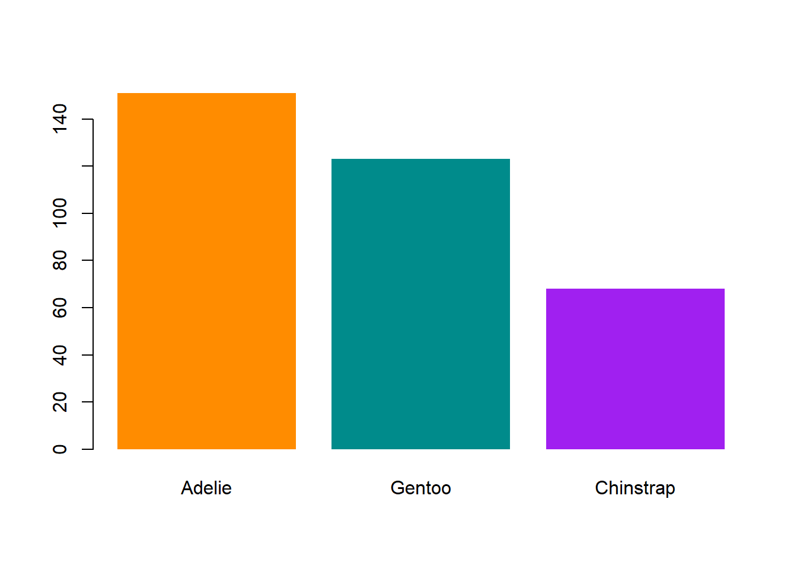
Ajustons quelques éléments :
boxplot(pingouins_propre$ratio_bec ~ pingouins_propre$espece,
col = NA,
border = c("darkorange", "purple", "cyan4"),
pch = 20,
main = "Rapport entre la longueur et la hauteur du bec",
xlab = "",
ylab = "Ratio")
L’argument pch permet de modifier la forme des points dans un graphique. 
Histogramme
Un histogramme sert à visualiser la distribution d’une variable numérique.
Comment se distribue la masse corporelle des pingouins ? Nous utilisons la fonction hist()
hist(pingouins_propre$masse_corporelle_g)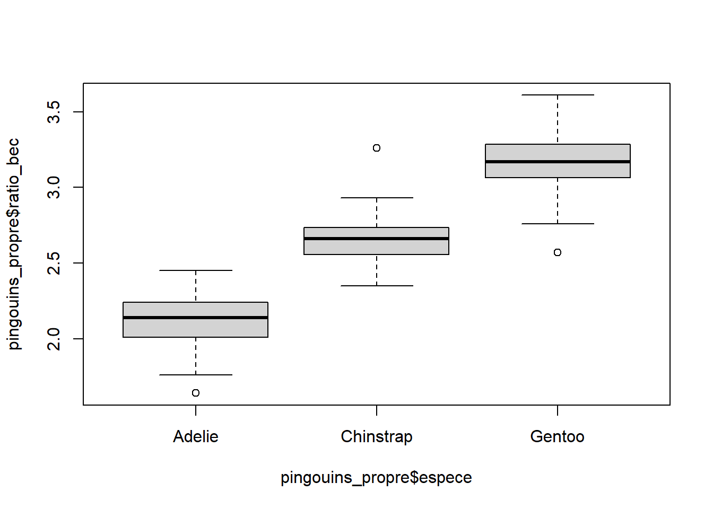
L’argument breaks permet d’ajuster le nombre de classes de l’histogramme :
hist(pingouins_propre$masse_corporelle_g,
breaks = 20)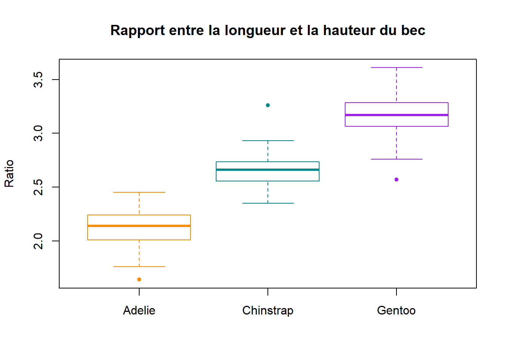
Nous souhaiterions représenter les valeurs en kilogrammes plutôt qu’en grammes pour facililter la lecture :
hist(pingouins_propre$masse_corporelle_g / 1000,
breaks = 20)
Améliorons notre graphique :
hist(pingouins_propre$masse_corporelle_g / 1000,
breaks = 20,
col = "lightblue",
border = "darkblue",
main = "Distribution de la masse corporelle",
xlab = "Masse (kgs)",
ylab = "Fréquence")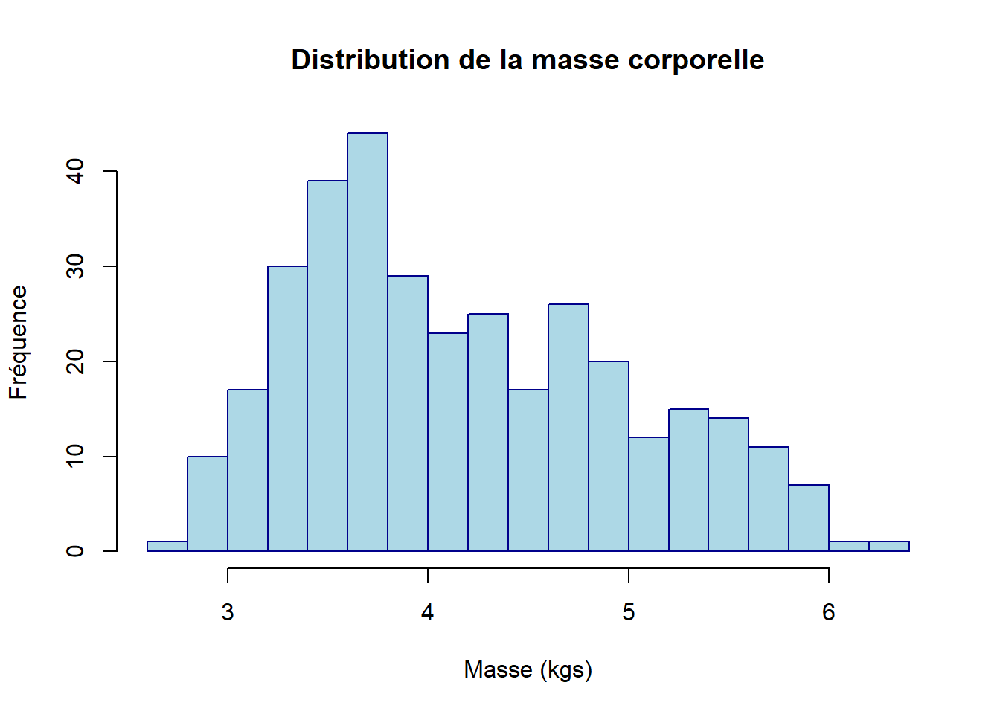
Scatter plot
Le scatter plot (ou nuage de points) permet de représenter la relation entre deux variables numériques. Nous utilisons pour cela la fonction plot()
Quelle est la relation entre la longueur des ailes et la longueur du bec ?
plot(x = pingouins_propre$longueur_aile_mm,
y = pingouins_propre$longueur_bec_mm)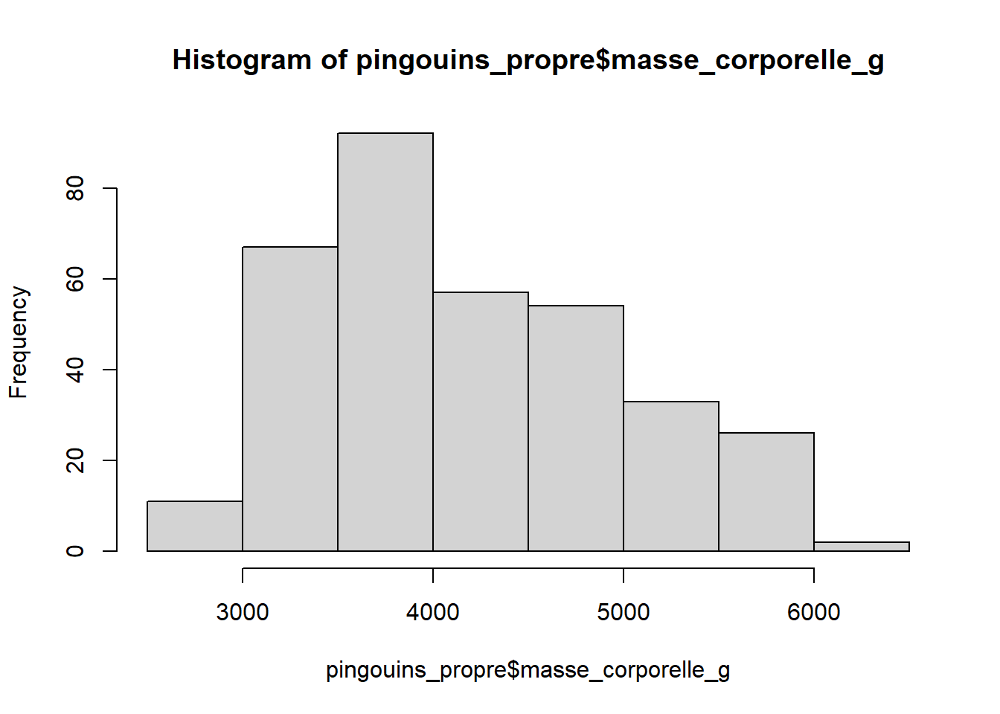
Ce graphique ne nous donne aucune indication sur les différentes espèces. Nous allons donc ajouter une couleur à chaque point, en ajoutant une variable couleur à notre tableau d’origine. Les valeurs de cette variables dépendent de l’espèce.
pingouins_propre$couleur[pingouins_propre$espece == "Adelie"] <- "darkorange"
pingouins_propre$couleur[pingouins_propre$espece == "Chinstrap"] <- "purple"
pingouins_propre$couleur[pingouins_propre$espece == "Gentoo"] <- "cyan4"Représentons à nouveau nos données :
plot(x = pingouins_propre$longueur_aile_mm,
y = pingouins_propre$longueur_bec_mm,
col = pingouins_propre$couleur)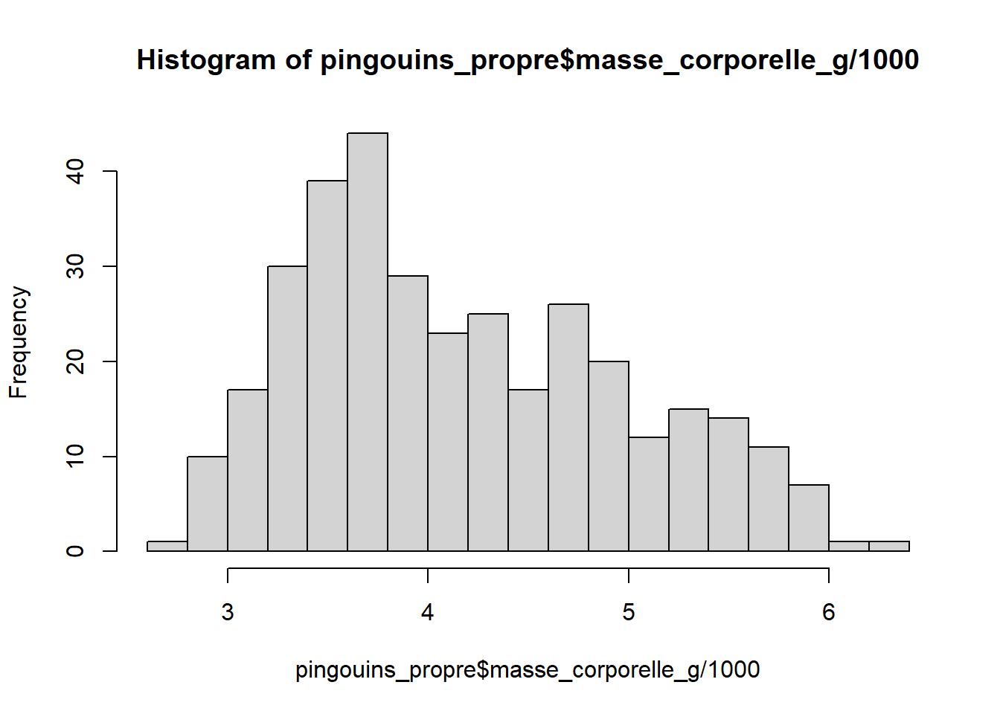
Améliorons à présent le graphique en modifiant la forme des points et en ajoutant/modifiant les titres :
plot(x = pingouins_propre$longueur_aile_mm,
y = pingouins_propre$longueur_bec_mm,
col = pingouins_propre$couleur,
pch = 20,
main = "Relation entre la longueur des ailes et la longueur du bec",
xlab = "Longueur des ailes (mm)",
ylab = "Longueur du bec (mm)")
Pour finir, ajoutons une légende à notre graphique à l’aide la fonction legend() :
plot(x = pingouins_propre$longueur_aile_mm,
y = pingouins_propre$longueur_bec_mm,
col = pingouins_propre$couleur,
pch = 20,
main = "Relation entre la longueur des ailes et la longueur du bec",
xlab = "Longueur des ailes (mm)",
ylab = "Longueur du bec (mm)")
legend(legend = sort(unique(pingouins_propre$espece)),
x = 220,
y = 40,
col = c("darkorange", "purple", "cyan4"),
pch = 19)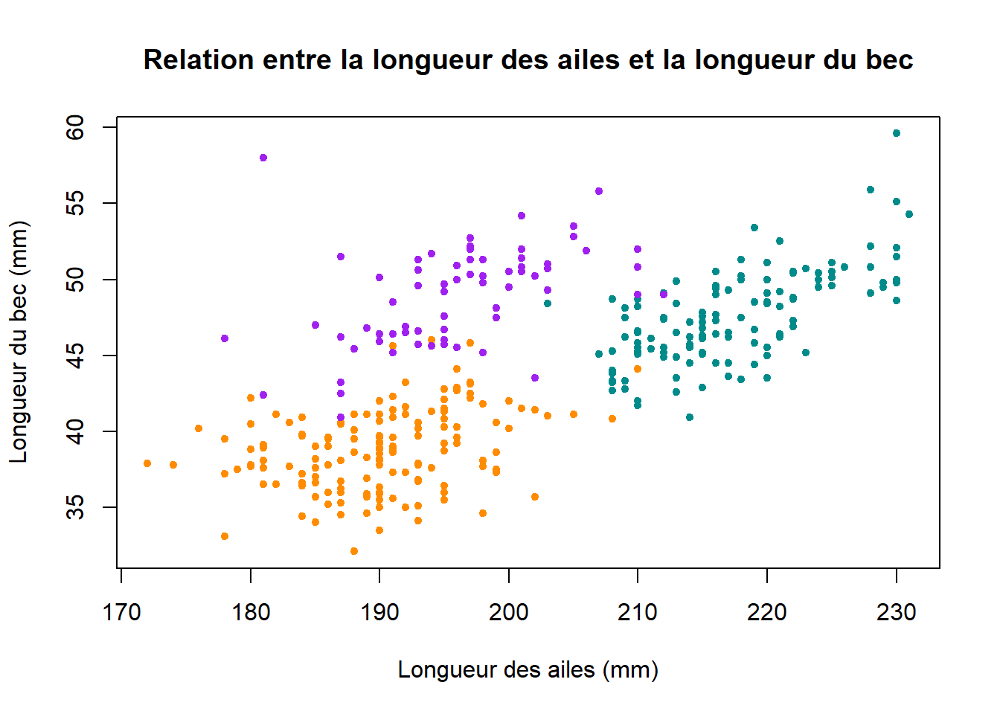